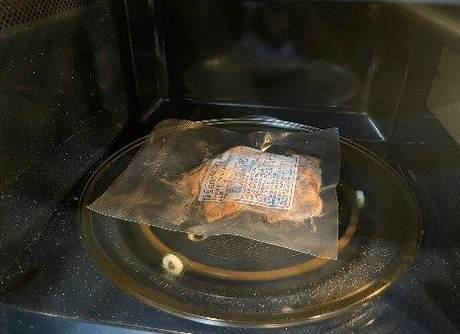
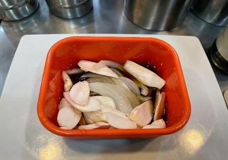
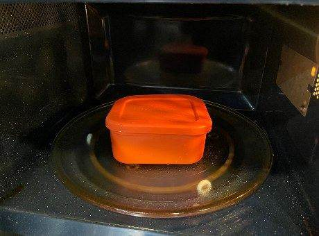
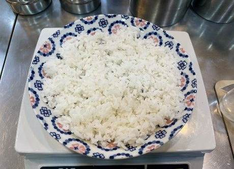
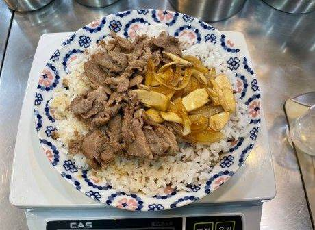
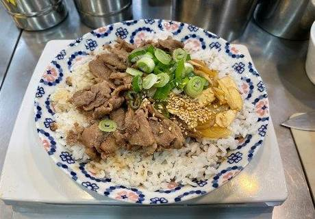
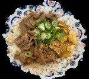

| 메뉴명 | 바싹 직화불고기 듬뿍덮밥 |
|---|---|
| 판매가격 | 8,900원 |
| 원재료 | 직화불고기, 양파, 대파, 새송이버섯, 달큰간장소스, 볶음참깨, 밥 |
| 사용 부자재 | 덮밥접시 |
| 메뉴특징 | 달달 짭짤한 특제 간장소스와 숯불 향 가득 직화불고기를 듬뿍 올린 덮밥 |
조리방법

1
냉동 직화불고기 1팩은 살짝 뜯어 전자레인지에 2분간 돌린다.
냉동 직화불고기 1팩은 살짝 뜯어 전자레인지에 2분간 돌린다.

2
전자레인지 용기에 달큰간장소스 4펌프(40g), 새송이 20g, 양파 20g을 넣는다.
전자레인지 용기에 달큰간장소스 4펌프(40g), 새송이 20g, 양파 20g을 넣는다.

3
뚜껑을 덮고 전자레인지에 넣어 1분간 돌려 소스를 만든다.
뚜껑을 덮고 전자레인지에 넣어 1분간 돌려 소스를 만든다.

4
그릇에 밥 200g을 넓게 펼쳐 담는다.
그릇에 밥 200g을 넓게 펼쳐 담는다.

5
밥 위에 데운 직화불고기를 펼쳐 담고 소스를 부어 담는다.
밥 위에 데운 직화불고기를 펼쳐 담고 소스를 부어 담는다.

6
중앙에 대파 10g, 볶음참깨 1g을 뿌려 완성한다.
중앙에 대파 10g, 볶음참깨 1g을 뿌려 완성한다.

7
단무지, 우동국물과 함께 세팅하여 제공한다.
단무지, 우동국물과 함께 세팅하여 제공한다.